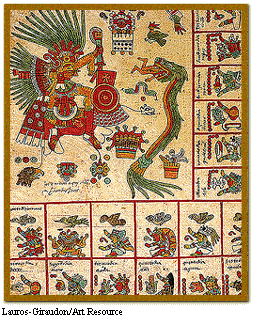

 |
| Pictured here: Xipe Tótec, on the left, is the Aztec god of spring. To the right is another god, Quetzalcóatl, who appears as a snake. |
|
Picture This Aztec Books Quantities limited--Many books destroyed during conquest. Translations not included. New, never before seen in Paris. Trained Aztec scribes called tlacuilo produced these colorful books. They filled the pages both with large illustrations and with writing in the form of small pictures that each represent either a sound or an idea. An Aztec book consists of a long strip of paper or other material painted on both sides and folded back and forth to form pages. Books have been produced on a variety of surfaces--deerskin, cloth, and paper made of the bark of wild fig trees. |